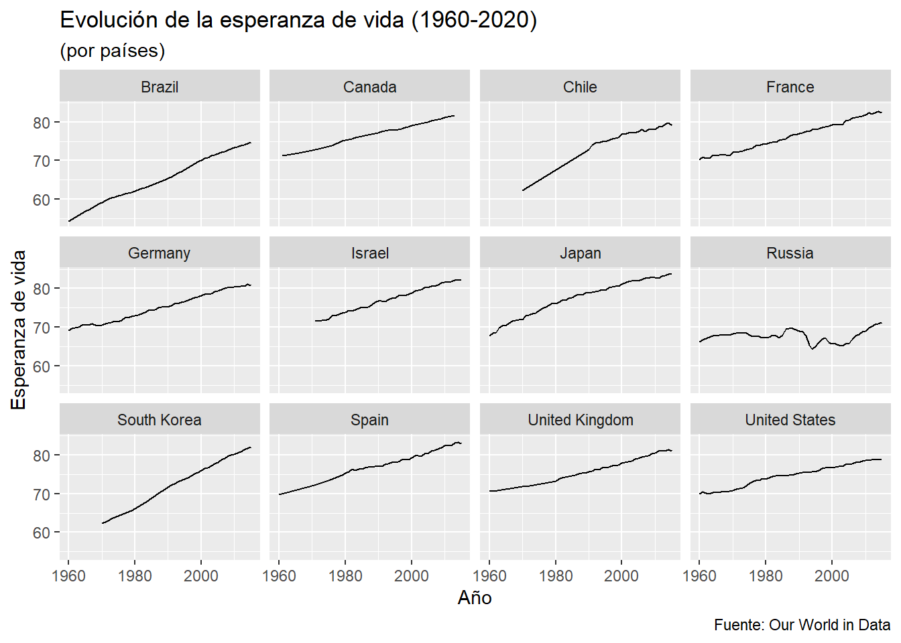
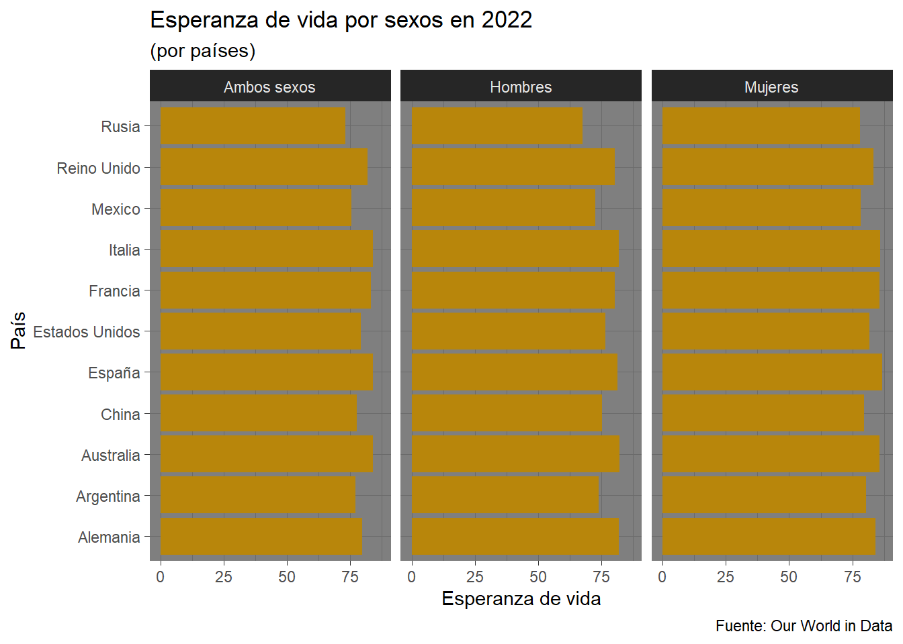
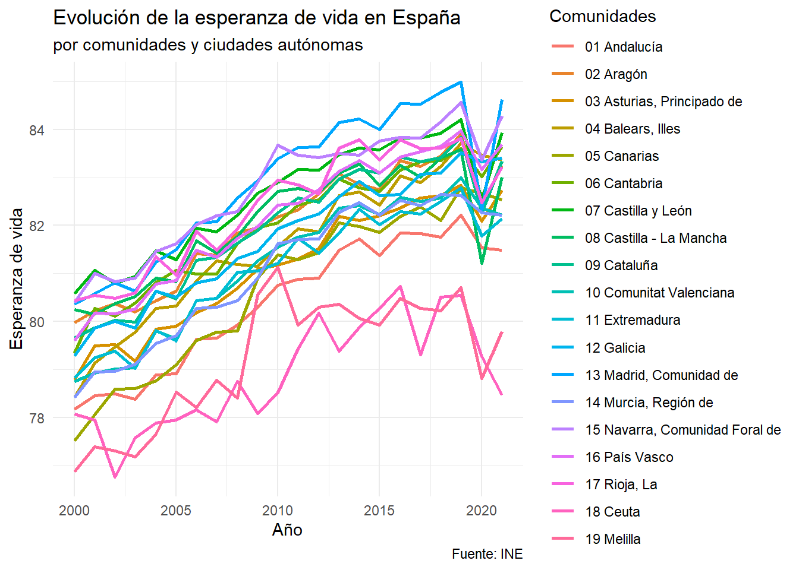
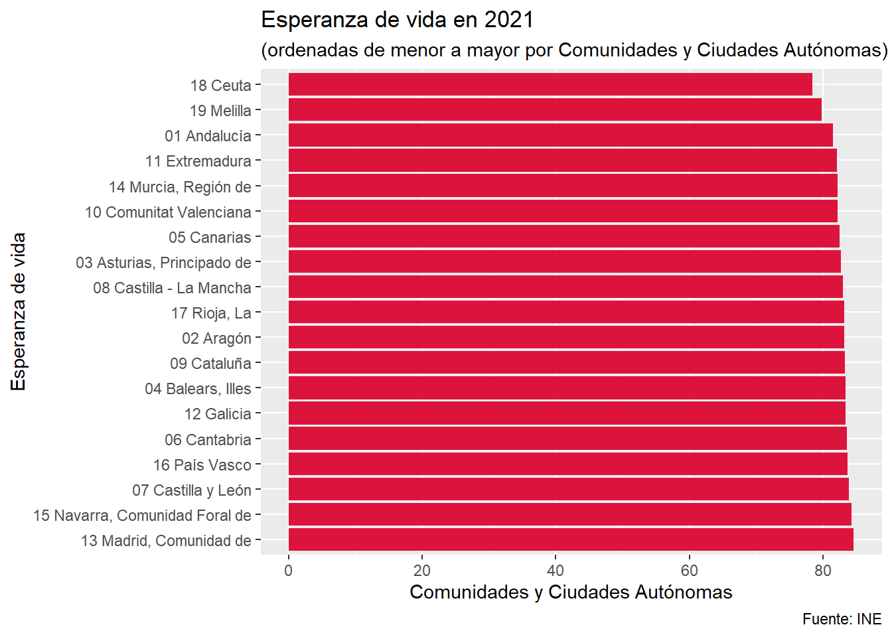

Introducción
En el siguiente trabajo, vamos a presentar y explicar un poco cómo ha evolucionado la esperanza de vida a lo largo de este último medio siglo en los diferentes países del mundo. Empezaremos más general, pero también nos centraremos en la evolución que ha tenido en España y en sus comunidades.

Paquetes
Antes de comenzar el trabajo, y para que no nos de ninguna pega a la hora de cargar los datos o las gráficas en la página web, vamos a cargar los paquetes que he utilizado durante la realización de todo el trabajo:
Esperanza de vida en 2022
Primeramente, y mediante “webscrapping”, vamos a cargar los datos en la memoria de R/Rstudio:
Código
my_url2 <- "https://www.worldometers.info/demographics/life-expectancy/"
content <- read_html(my_url2)
body_table2 <- content %>%
html_nodes('body') %>%
html_nodes('table') %>%
html_table(dec = ",", fill = TRUE)
tabla_3 <- body_table2[[1]]
names(tabla_3) <- c("a", "Pais", "Ambos sexos", "Mujeres", "Hombres")
tabla_3 <- tabla_3 %>% select(-a)Y, acto seguido, creamos una datatable que muestre los valores de los 202 países que existen en el dataframe:
Como podemos observar, los países que encabezan (teniendo en cuenta ambos sexos) la lista son:
- Hong Kong
- Japon
- Macao
- Suiza
- Singapur
Por otro lado, los últimos 5 países son:
- Sierra Leona
- Nigeria
- Lesoto
- Chad
- República de África Central
Evolución de la esperanza de vida en el período 1960-2020
En los siguientes gráficos tenemos la evolución de diferentes países del mundo de su esperanza de vida (incluyendo a ambos sexos).

Mientras, en el siguiente gráfico tenemos la separación por sexos de unos cuantos países:

Evolución de la esperanza de vida en España
En el siguiente gráfico, mostramos la evolución de la esperanza de vida en España entre el año 1975 y 2021.
Como podemos observar, en todo momento la esperanza de vida de las mujeres está por encima de la de los hombres.
Esperanza de vida por Comunidades y Ciudades Autónomas
Por otro lado, ya separado por Comunidades Autónomas y las dos Ciudades Autónomas de España tenemos el siguiente gráfico:

Si bien no se puede distinguir muy bien cada comunidad, sí podemos observar algo muy importante y es la tendencia al alza de la esperanza de vida. Y no es para menos, ya que España ocupa el sexto lugar en el ránking de mayor esperanza de vida.
Por último, ordenadas de menor a mayor, tenemos el siguiente gráfico de barras que muestra la esperanza de vida en España en el año 2021:

Mujeres vs Hombres
Según la Organización Mundial de la Salud (OMS), en 2016 el promedio de esperanza de vida al nacer de la población mundial era de 72 años.
Pero cuando dividimos este promedio entre hombres y mujeres, la media femenina es de 74 años y dos meses contra los 69 años y ocho meses de los varones.
Pero, ¿cuáles son las causas?
Genes

Parece ser que los hombres han vivido siempre un poco menos que las mujeres, entre otras razones, por su composición genética.
“Los embriones masculinos mueren a un ritmo mayor que los embriones femeninos”, dice el profesor David Gems, del University College London.
Las mujeres tienen cromosomas XX y los hombres tienen XY. Los cromosomas contienen genes. Y los cromosomas X tienen muchos genes que te ayudan a mantenerte con vida.
“Si tienes un defecto genético en el cromosoma X y eres una mujer, tienes una copia de seguridad. Pero si eres un hombre no tienes una copia de seguridad”, explica el genetista David Gems al programa de radio Crowd Science de la BBC.
Ocupación y comportamiento
En lugares plagados de conflictos, la esperanza de vida masculina disminuye con velocidad.
Pero en las regiones donde la atención médica es inadecuada, muchas mujeres mueren durante el parto.
Factores como fumar, beber y una mala alimentación pueden explicar en parte por qué la diferencia entre el promedio de vida de hombres y mujeres es mayor en algunos países que en otros.
En Rusia, por ejemplo, los hombres mueren 13 años antes que las mujeres. Puede que esto se deba al consumo excesivo de alcohol en este país.
Aunque las mujeres viven más tiempo, también sufren más enfermedades, particularmente en sus últimos años de vida.
“El descenso en el consumo del alcohol y el tabaco ha beneficiado mayoritariamente a los hombres, que tienden a beber y a fumar más que las mujeres”, dijo el profesor de estadística de la La Escuela de Negocios Cass, Les Mayhew, al periódico británico The Guardian.
Conclusión
El principal dato que nos damos cuenta es que: con el paso de los años la esperanza de vida ha ido aumentando prácticamente en todos los países, debido a las mejoras de la calidad de vida gracias a las tecnologías y a la evolución de las economías. Sin embargo, el futuro puede ser bastante incierto debido a las grandes crisis y posibles guerras que podamos vivir. Además, parece que la economía está (si es que no ha llegado ya) llegando a su techo, por lo que probablemente, tarde o temprano, volvamos a caer en la trampa Maltusiana. El aumento de los ingresos por persona no es sostenible a largo plazo, ya que el crecimiento económico es inevitablemente consumido por el aumento de la población. Por tanto, la humanidad se enfrenta a una batalla frente a la tecnología, los recursos y frente a sí mismos por ver si cada vez podremos vivir más y más, o por el contrario, solo nos queda aceptar que poco a poco la calidad de vida así como la esperanza de vida vaya a comenzar a disminuir.
Por último, cabe destacar que las mujeres tienen más esperanza de vida que los hombres, debido a sus genes, sus ocupaciones (los hombres suelen hacer trabajos más “peligrosos”) y, quién sabe si por la naturaleza debido a que nacen más hombres que mujeres, por lo que puede ser que sea la manera de esta para “equilibrar” la balanza de nuevo.
Bibliografía
OECD data. (s. f.-b). theOECD. https://data.oecd.org/
Roser, M. (2013, 23 mayo). Life Expectancy. Our World in Data. https://ourworldindata.org/life-expectancy
INE - Instituto Nacional de Estadística. (s.f.-b). INE. Instituto Nacional de Estadística. INE. https://www.ine.es